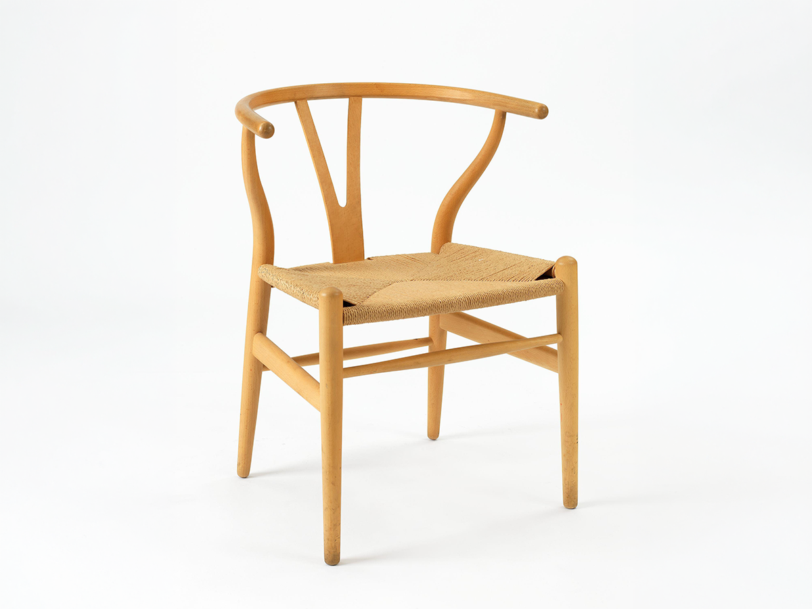

Hans J. Wegner · Dinamarca · 1949

La silla Wishbone une el respaldo y los apoyabrazos en una sola pieza de madera curvada al vapor. Para sostener esa pieza, Wegner diseñó un respaldo en forma de Y, que le dio el nombre a la silla: en inglés, wishbone es el hueso en forma de horquilla de las aves.
Su asiento se teje a mano con cerca de 120 metros de cuerda de papel.
Wegner se inspiró en retratos de comerciantes daneses sentados en sillas chinas de la dinastía Ming. La empresa Carl Hansen & Søn la produce sin interrupción desde 1950, y hoy es uno de los íconos del diseño danés del siglo XX.
Ficha elaborada por Nombre Apellido · Diseño de Interfaces Web · UDP · 2026